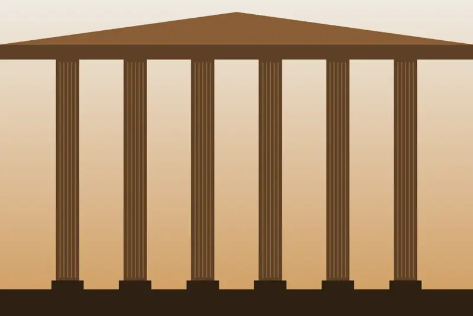
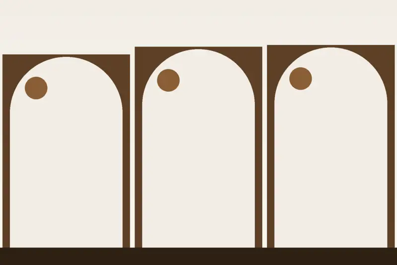
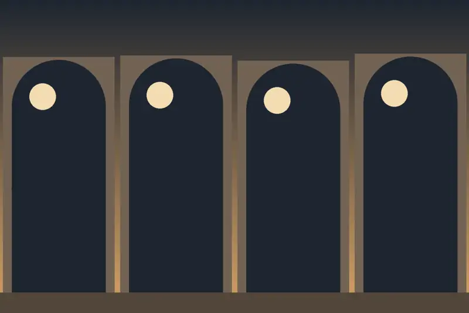
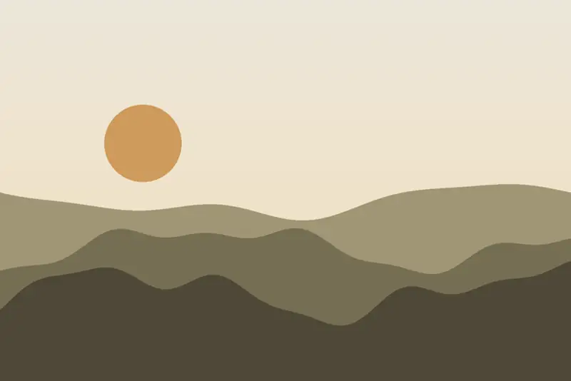
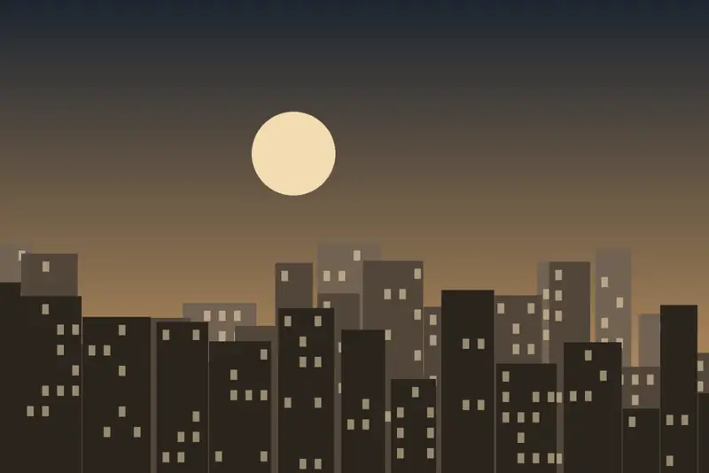
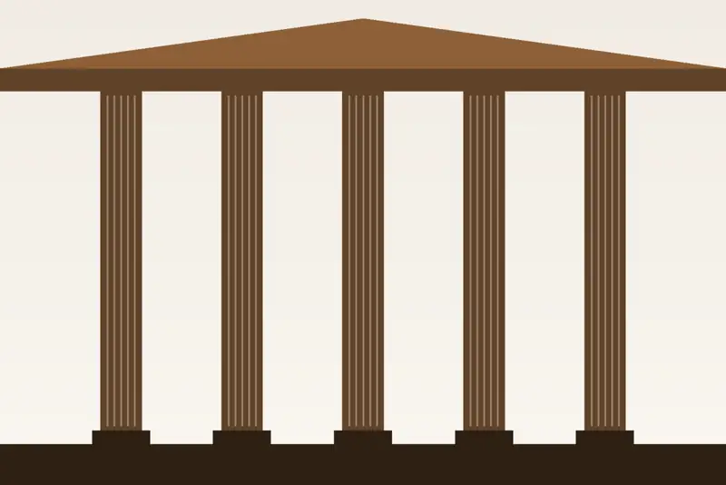
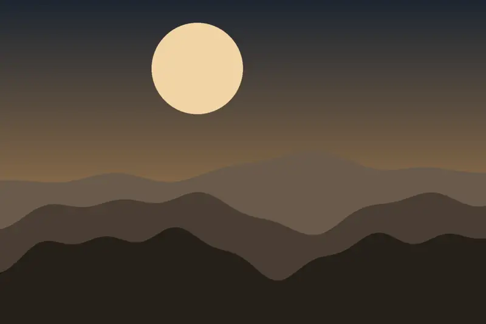

Individual y doble
Habitaciones individuales y dobles con baño privado, televisión plana y wifi, para visitas de negocios u ocio.
Ver disponibilidad →Desde 1916, primero como posada y hoy como hostal recientemente reformado.
Gabriel Cortés Martínez fundó la posada de Cortés en la calle Ramón y Cajal alrededor de 1916. En febrero de 2017 el hostal reabrió, pasando a una nueva generación.
A escasos minutos del casco histórico y de la zona de ocio y gastronomía, y a unos metros de las estaciones de tren y autobús.

Todas con baño privado, televisión plana y wifi. Las imágenes son ilustraciones y no muestran el hostal real.

Habitaciones individuales y dobles con baño privado, televisión plana y wifi, para visitas de negocios u ocio.
Ver disponibilidad →
Habitaciones de matrimonio y triples, con las mismas comodidades, para viajar en pareja o en familia.
Ver disponibilidad →



Cuenca, ciudad declarada patrimonio de la humanidad por la UNESCO, y la Serranía de Cuenca.
Calle de Ramón y Cajal, 45 · 16004 Cuenca, en pleno centro. Recepción abierta 24 horas.
Calle de Ramón y Cajal, 45 · 16004 Cuenca